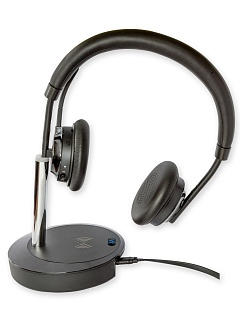

VT X300BT-D
Цена носит информационный характер — актуальную стоимость и наличие уточняйте у менеджера.
VT X300 BT - профессиональная премиум Bluetooth-гарнитура для руководителей и статусных сотрудников.
Премиум Дизайн.
Гарнитура сделана из качественных износостойких материалов. Сменные амбушюры и оголовье из перфорированной эко-кожи обеспечивают хорошее прилегание и комфортное ношение на протяжении всего рабочего дня и экранирование посторонних шумов.
Hi-Fi звук.
Большие динамики диаметром 4 см обеспечивают кристально чистые яркие высокие частоты и подчёркнутые басы. Данная гарнитура может применяться не только для участия в онлайн-конференциях - используя её, можно комфортно слушать музыку и смотреть фильмы.
Направленный микрофон с шумоподавлением.
Микрофон удобно прячется внутри оголовья и не мешает использованию гарнитуры. Вы можете спрятать микрофон не снимая гарнитуры во время перекуса и кофе-паузы. Угол поворота микрофона - 280 градусов.
Подставка со встроенной беспроводной зарядной станцией обеспечивает удобное хранение, заряд аккумулятора. Также от беспроводной зарядной станции легко можно подзарядить ваш смартфон или часы.
В комплекте имеется заранее сопряжённый USB-dongle, таким образом Вы можете подключить X300BT-D к любому компьютеру (даже без Bluetooth модуля). Гарнитура поддерживает подключение до 5 источников звука одновременно. Вы можете подключить смартфон, компьютер, планшет и телевизор. В момент прослушивания музыки при поступлении входящего вызова гарнитура переключится на устройство с активным вызовом
Если аккумулятор разрядился, а вам необходимо продолжить собрание, просто подключите гарнитуру кабелем USB к компьютеру. Вы сможете продолжить общение по USB, при этом аккумулятор будет заряжаться.
Характеристики
- Широкополосные динамики, HD-звук
- Идеально подходит для прослушивания музыки
- Встроенный светодиодный индикатор занятости на гарнитуре
- Подключение Bluetooth к двум устройствам одновременно: для звонков и прослушивания музыки
- Дистанция удаления от источника (ноутбука/смартфона) - до 30 м
- Совместимость с MS Teams, SkypeForBusiness, 3CX, BRIA, Jabber, Cisco и т. д. с помощью приложения UCM.
- Регулируемая на 280° штанга микрофона
- Диапазон беспроводной связи до 100 футов / 30 м
Динамик
- Музыкальный режим, полоса пропускания динамиков: 20 Гц — 20 кГц
- Телефонный режим, полоса пропускания динамика: 100 Гц — 8 кГц
- Диаметр динамиков: 40 мм
- HD-звук для кристально чистых звонков и музыки
Микрофон
- на штанге с однонаправленным микрофоном с шумоподавлением
- диапазон микрофона: 100Гц — 8КГц
- пассивное шумоподавление (технология CVC8.0)
Характеристики
- Тип соединения: Class 4 (до 30 метров) и Bluetooth 5.0 (до 50 м)
- Управление звуком: Отключение/включение трубки, Удержание, Отклонение, Повторный набор, Отключение микрофона, Увеличение/уменьшение громкости динамика на гарнитуре
- Встроенный индикатор занятости: 2 красных индикатора, включаются автоматически при разговоре по телефону.
- температура хранения: от -10°C до +55°C
- время разговора: До 10 часов
- время ожидания: До 240 часов
- время зарядки: 3 часа
- индикатор занятости